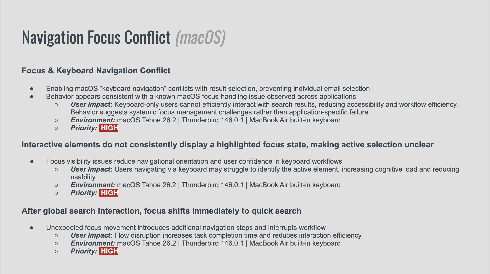
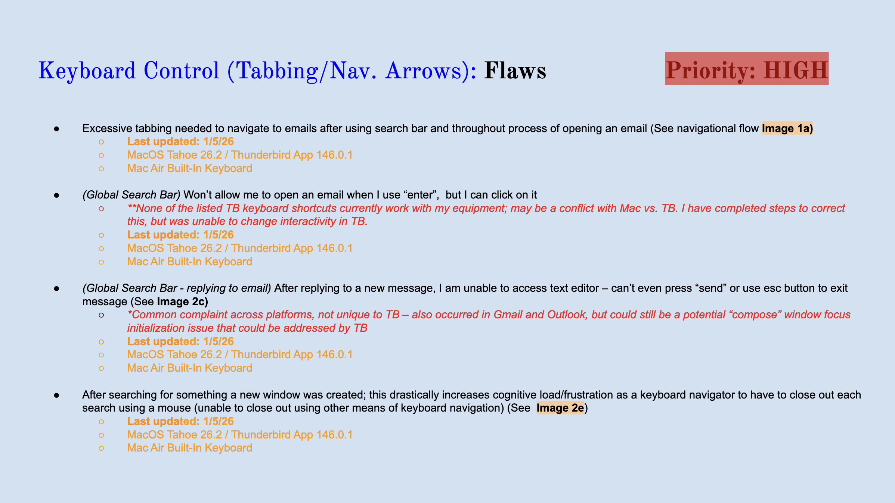
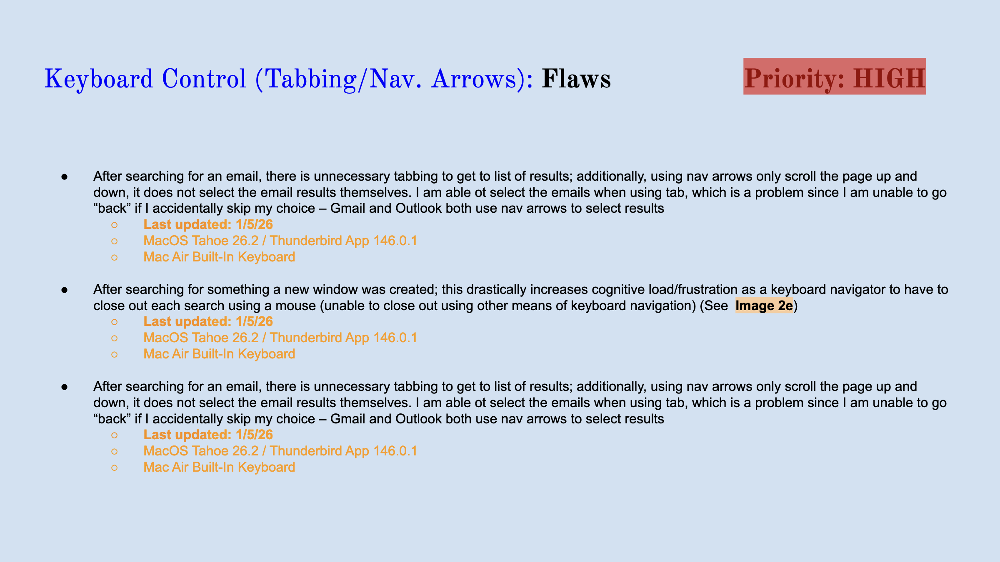
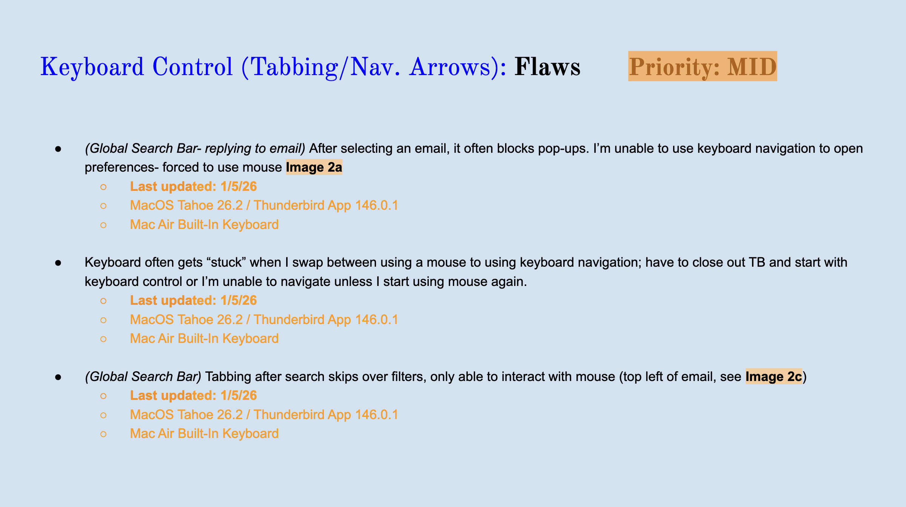
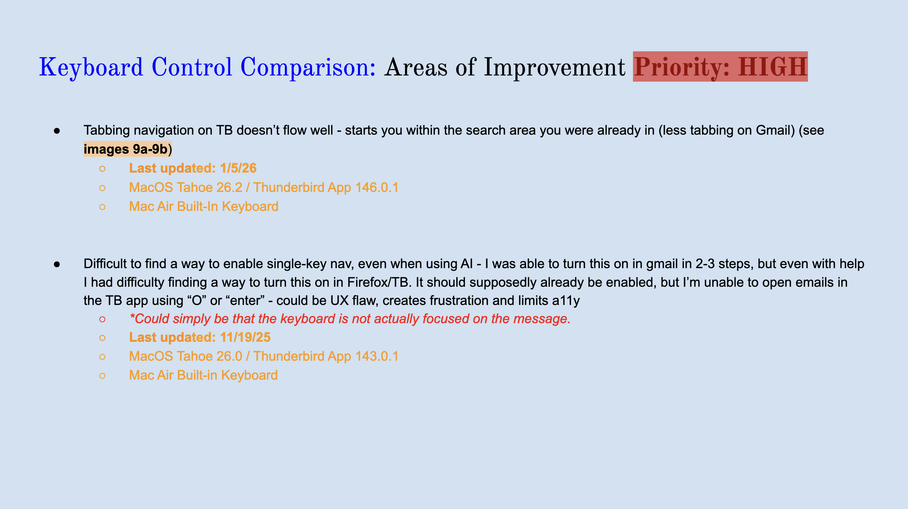
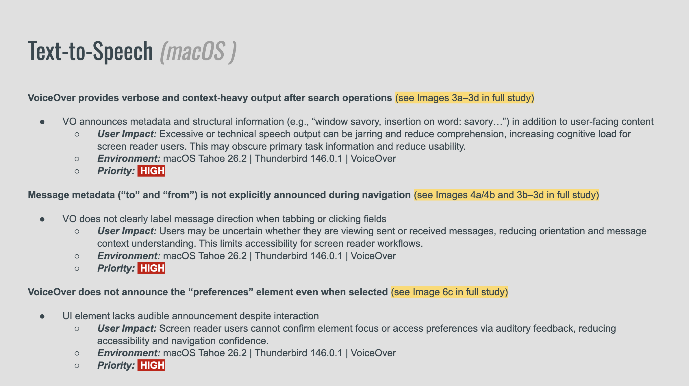
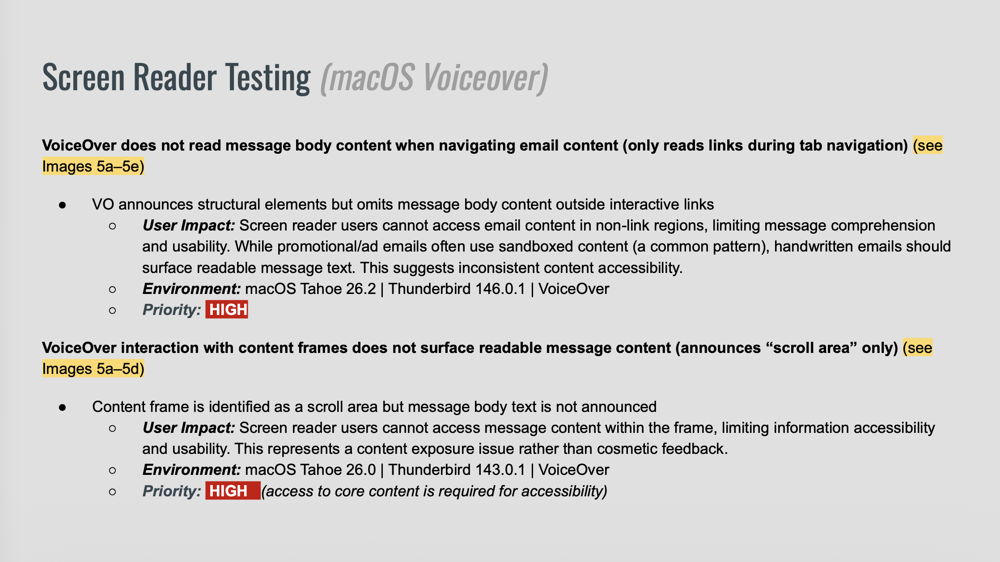
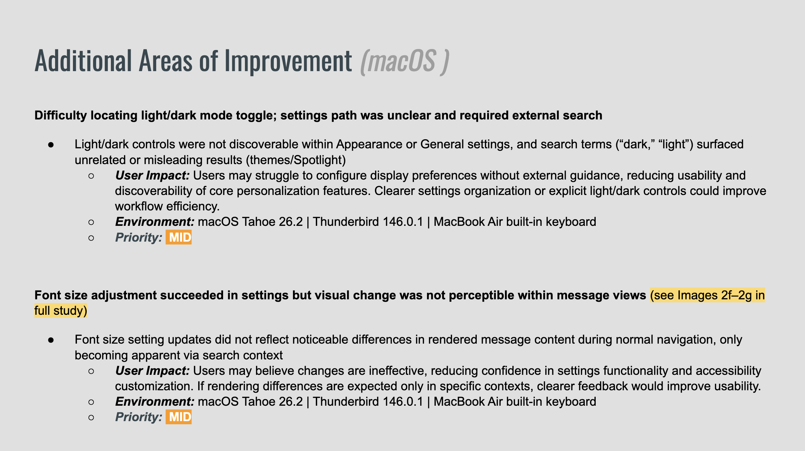
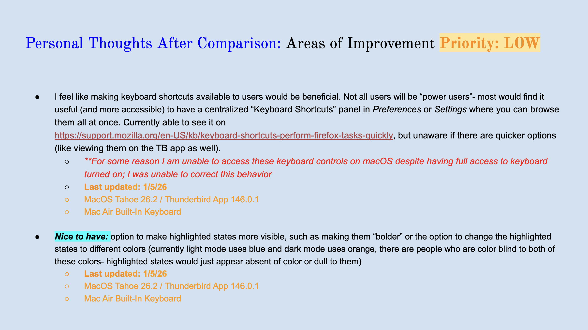

Accessibility Report: Thunderbird Global Search Bar
October 2025 - January 2026
An accessibility study documenting how assistive technology users interact with Thunderbird's Global Search and email workflows. Using keyboard-only navigation and VoiceOver screen reader testing, this report documents focus management, keyboard navigation logic, and screen reader compatibility across common email tasks — evaluated against WCAG 2.1/2.2 and POUR principles.
Findings were benchmarked against Gmail and Outlook to identify gaps in expected accessibility patterns and surface opportunities for improved consistency across productivity platforms — with particular focus on keyboard-only and screen reader users.
Testing conducted on macOS Tahoe 26.0 to 26.2 using Thunderbird 143.0.1 to 146.0.1, MacBook Air built-in keyboard, and VoiceOver.
*Voice control analysis in progress — findings to be added in a future iteration of this study.

Navigational Focus
During testing on macOS with full keyboard access enabled, I observed difficulty selecting individual emails, and there was no visible highlight to indicate the current focus point, making it unclear where the focus was located. Additionally, after using the Global Search bar, the interface immediately placed me into Quick Search, which was disorienting and slightly disruptive to workflow. While these behaviors were specific to this test instance and may not be consistent across all users or systems, they highlight potential accessibility challenges for keyboard-only navigation.




Keyboard Control
During keyboard-only testing of Thunderbird’s Global Search and email workflows, I observed several accessibility challenges. Excessive tabbing was required to navigate to emails, and the Enter key did not always open messages. After replying, the text editor was sometimes inaccessible, and new windows opened unexpectedly, increasing cognitive load. Arrow keys only scrolled the page rather than selecting emails, and switching between mouse and keyboard often disrupted focus. These findings highlight opportunities to improve keyboard navigation, focus management, and workflow consistency across testing environments.


Screen Reader
Screen reader testing using macOS VoiceOver revealed several usability barriers. Announced output was frequently verbose or redundant, and key fields such as "To" and "From" were not consistently identified. Email body content was largely unread, with VoiceOver announcing only interactive elements such as links. On macOS, instructions for interacting with content frames were unclear, and activating those frames did not produce meaningful output. These findings indicate that Thunderbird's screen reader experience requires refinement to deliver clear, relevant, and navigable feedback for VoiceOver users.


Additional Findings
During testing of Thunderbird’s settings and appearance workflows, I observed usability challenges with light/dark mode and font adjustments. Locating and toggling themes was confusing, requiring multiple navigation attempts to locate to find the correct settings. Font size changes were not immediately apparent when viewing emails, and highlighted states lacked sufficient contrast for users with color vision deficiency. Enhancing discoverability of keyboard shortcuts and offering a centralized panel for them could improve accessibility for all users. Additional improvements, such as skip-to-content functionality and more visible focus indicators, would further support keyboard and assistive technology navigation.